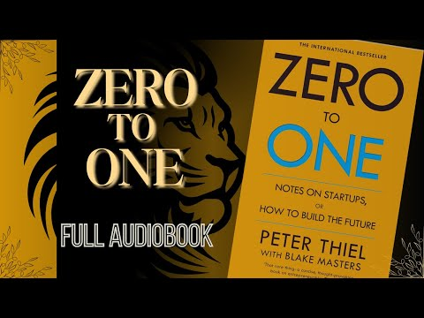

지난 한 달 동안 잘 지내셨나요? 한 달 동안 AI를 사용한 경험이 있으시다면 공유해주셔도 좋아요.
이번 책은 어떠셨나요? 공감이 갔거나, 공감하지 않았던 부분이 있으신가요?
0에서 1, 1에서 N에 대하여
대부분의 사람들이 믿지만, 나는 동의하지 않는 사실에 대하여
Book Talk

지난 한 달 동안 잘 지내셨나요? 한 달 동안 AI를 사용한 경험이 있으시다면 공유해주셔도 좋아요.
이번 책은 어떠셨나요? 공감이 갔거나, 공감하지 않았던 부분이 있으신가요?
0에서 1, 1에서 N에 대하여
대부분의 사람들이 믿지만, 나는 동의하지 않는 사실에 대하여